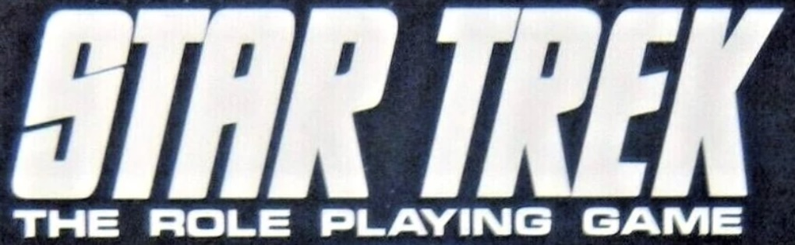
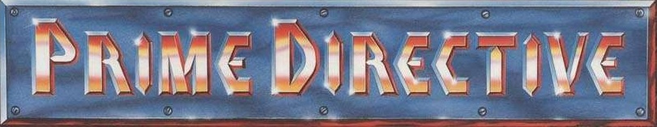

из «Звёздного пути» я смотрел всё или почти всё, причём смотрел отсортированное по звёздной дате (это было до выхода DIS, PIC и SNW, их потом досматривал по мере выхода), но играть по нему пока не проходилось. если рулбуки сами попадают в руки, не выпускаю, но специально за ними не охочусь. все игры из этого списка очень мало механически между собой совместимы, но концептуально задуманы специально для игры по одному и тому же сеттингу.
Heritage Models (1978)
Terra Games Company (1982)
FASA (1982–1989)
2001Star Trek: The Role Playing Game, Basic Game (1983)2001Star Trek: The Role Playing Game, Deluxe Game (1986)2002The Klingons: A Sourcebook and Character Generation Supplement (1983)2002The Klingons, Star Fleet Intelligence Manual (1987)2003Star Trek: Starship Tactical Combat Simulator (1983)2003AStar Trek: Starship Tactical Combat Simulator (1986)2004Star Trek: The Role Playing Game, Basic Game, Second Edition (1983–1984)2005The Romulans (1984)2006Star Trek III Sourcebook Update: Starship Combat Game (1984)2007The Triangle (1985)2008The Orions (1987)2011The Federation (1986)2012Star Trek The Next Generation: Officer’s Manual (1988)2014Star Fleet Intelligence Manual (1987)2224Star Trek IV Sourcebook Update: The Voyage Home (1986)2227Star Trek The Next Generation: First Year Sourcebook (1989)24362Star Trek: The Role Playing Game, Basic Game (Games Workshop, 1985)
Tsukuda Hobby (1983)
Amarillo Design Bureau, Inc. / Task Force Games (1993–2008)
- Prime Directive (1993)
- GURPS Prime Directive (2002, 2005)
- Prime Directive d20 (2005)
- Prime Directive PD20 Modern (2008)
Last Unicorn Games (1998)
- …
Decipher (2002)
Book 1: Star Trek Roleplaying Game: Player's Guide (2002)Book 2: Star Trek Roleplaying Game Narrator's Guide (2002)Book 3: Starfleet Operations Manual (2003)Book 4: Starships (2003)Book 5: Aliens (2003)Book 6: Creatures (2003)Supplement: Star Trek Narrator's Screen (2003)- Worlds (PDF, 2005)
- Mirror Universe: Through a Glass Darkly (PDF, 2005)
первая редакция от Mōdiphiüs (2017)
- …
вторая редакция от Mōdiphiüs (2024)
- …
хорошие сайты по теме
- Star Trek: The Role Playing Game (FASA) на Трекипедии